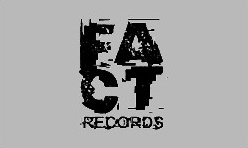
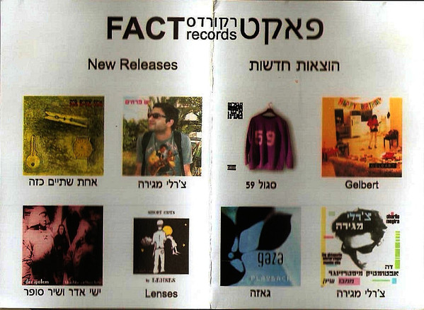
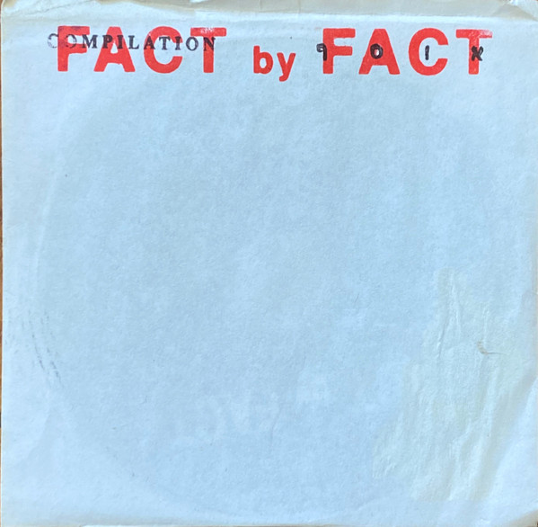

פאקט
רקורדס
(FACT
Records)
אדם/קבוצה

פאקט היה לייבל עצמאי שנוסד על ידי יורם אליקים, שעבד בחנות התקליטים באלאנס ברחוב שץ, שגם תמכה בהקמת הלייבל ובקיומו. הלייבל החל את דרכו בהוצאת דיסקים בצריבה ביתית ממחשב, כשמטרתו של אליקים היתה לתעד את ההתרחשות והפעילות המוזיקלית שראה סביבו בזמן אמת. יוצרים רבים ראו בו אדם אליו ניתן לשלוח חומרים מוקלטים, לקבל ממנו פידבק ושיכול לעזור להם למצוא את הקהל שלהם. הלייבל קיבל תהודה כשהוציא מוזיקה של אמנים רבים וייחודיים, וייצג בעיני רבים את השוליים הירושלמיים. בין ההרכבים והאמנים היו יאפים עם ג'יפים, צ'ארלי מגירה, בגזרה האלקטרונית טפט, אורי קריסטל (אוגנדה), גרונדיק וסלאבה, גלברט, דיג'יי E (אלי שרגורודסקי), גאזה, בהיפ הופ סגול 59 ועוד. כמו כן הוציא בהוצאות מחודשות אלבומים של להקות אלטרנטיביות שלא נמכרו יותר כמו פלסטיק ונוס וישראל.
על רקע השתנות המצב הפוליטי והאינתיפאדה השנייה, בשנים 2001-2002, פאקט המשיכו להוציא מוזיקה ולהישמע יותר ויותר, כשאליקים מנהל את הכל כמעט לבדו. ב־2003, בשיא החשיפה והפופולריות, לאחר ערב שבו הופיעו אמני הלייבל בשלושה מוקדים שונים בתל אביב, אליקים החליט להפסיק את הפעילות. באלאנס נקלעה לקשיים כלכליים ולא יכלה לתמוך יותר בפאקט. אליקים שקל לקיים את פאקט כיחידה עצמאית אך זה לא קרה. במכתב ששלח לאמנים כתב שמתוך רצון לא להגרר לפשרות אומנותיות או לשנות את תנאי האמנים, וכדי לא להיקלע לבעיות פיננסיות הלייבל ייסגר.

עמוד פרומו מתוך דיסק
אליקים עבר עם חלק מהאמנים לחברת התקליטים אן אם סי, תחת השם "אודיו קולאז'". אודיו קולאז' פעלה כ־10 חודשים ואז נסגרה. לאחר מכן אליקים הפעיל את הלייבל משהו על הדרך, ששחרר אלבומים בין 2004-2009. כיום אליקים לא עוסק בעולם המוזיקה.

אלבום אוסף Fact by Fact, שנה לא ידועה